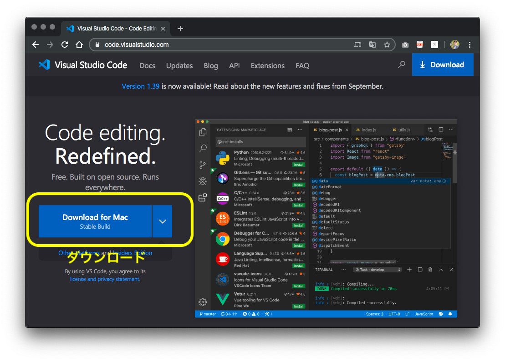
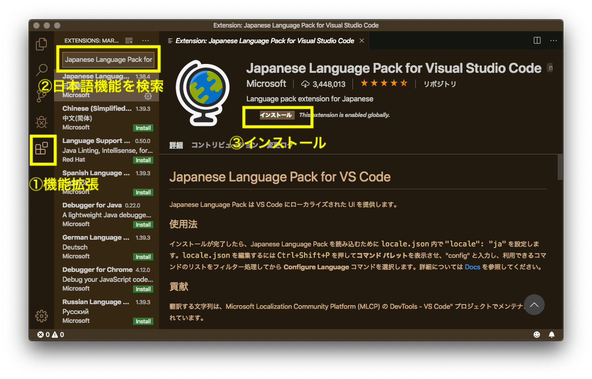

テキストエディタとしてVisual Studio Code(VSCode)についてご案内・紹介します。軽量のテキストエディタで入力の補完機能などがあります。
1.テキストエディタのインストール
Visual Studio Code(以下VSCode)をダウンロードしてインストールしましょう
⇒https://code.visualstudio.com/

2.テキストエディタの日本語化
インストール後、起動するとメニューなどが英語表記なので、日本語化しましょう。 ①機能拡張をクリックし ②「Japanese」で検索すると「Japanese Language Pack for Visual Studio Code」がヒットするので、 ③インストール。そしてVSCodeを再起動

3.設定と演習の方法
画面が小さいので全画面表示でご覧ください。